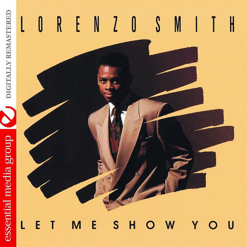

Lorenzo Smith
Lorenzo Smith is an American singer-songwriter who has released three albums.
Complete Discography & Tracklists (25)
2012 Let Me Show You (Digitally Remastered) 🎵 9 Tracks
2012 Angel 🎵 4 Tracks
2012 Make Love 2 Me 🎵 4 Tracks
2025 Million Dollar Man (Zoluwinskii Remix) 🎵 1 Tracks
2026 Rose Gold 🎵 0 Tracks
No tracks registered.